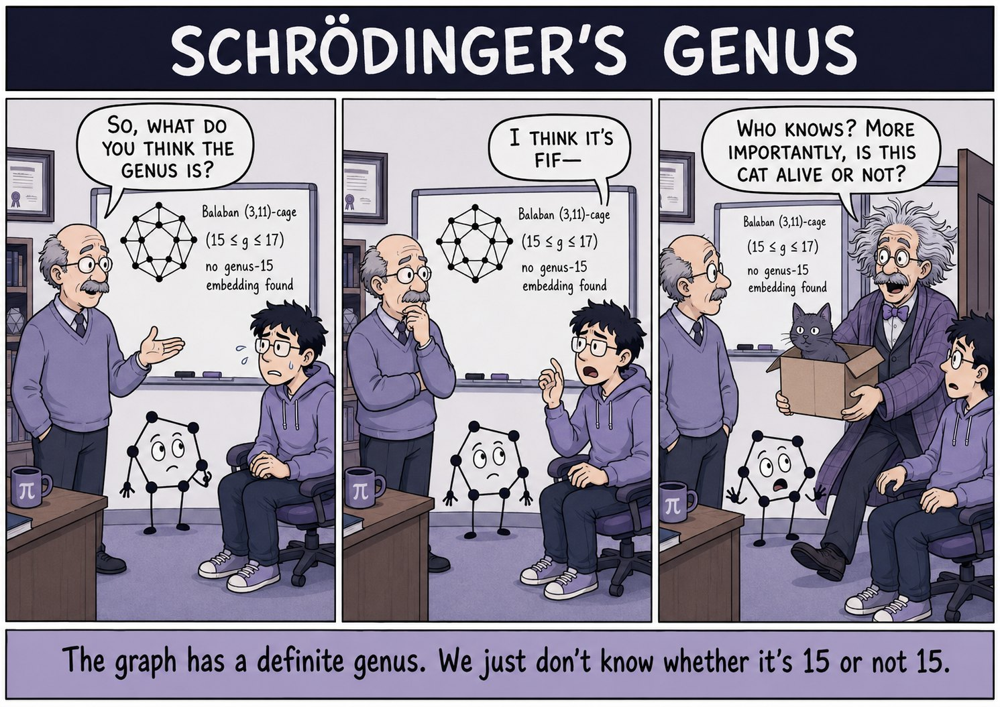
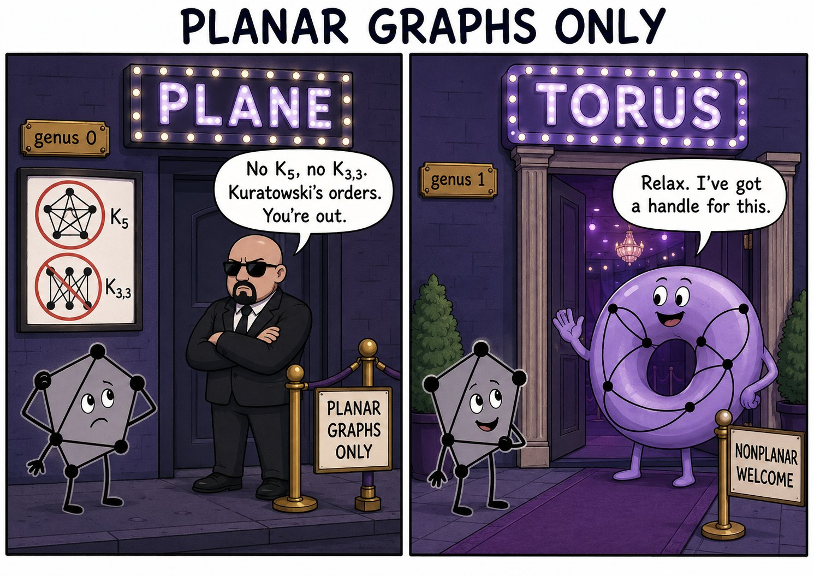
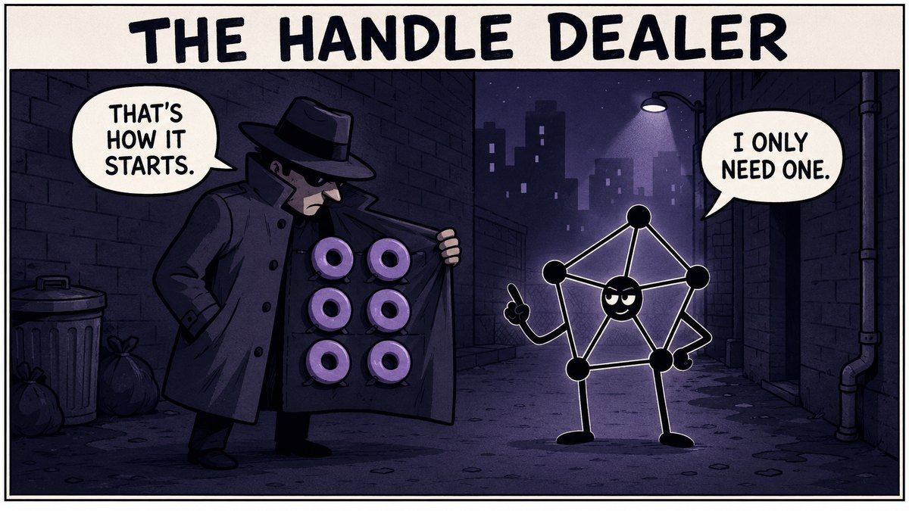
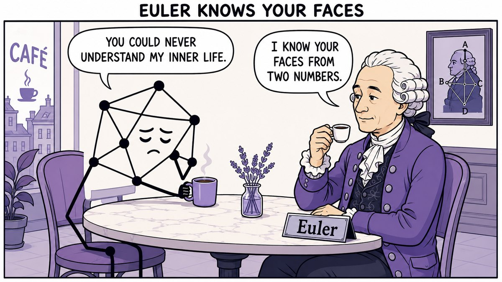
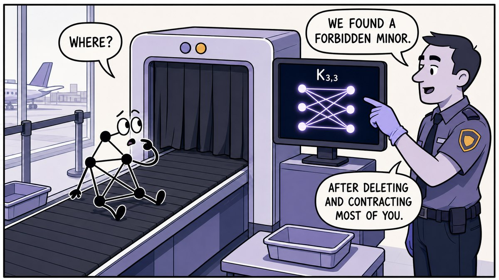
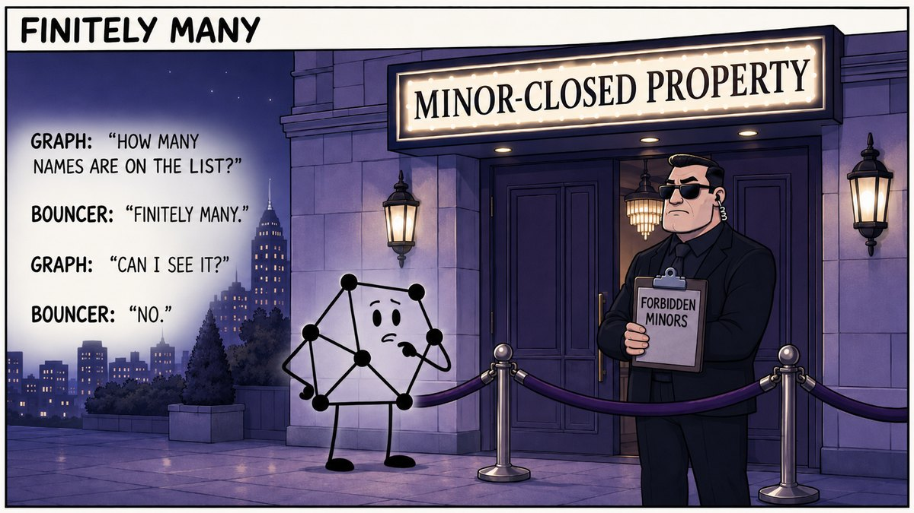
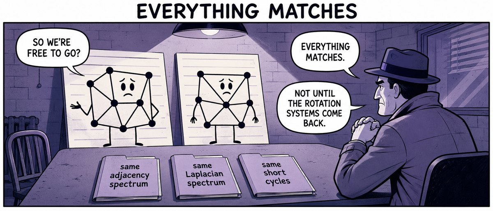
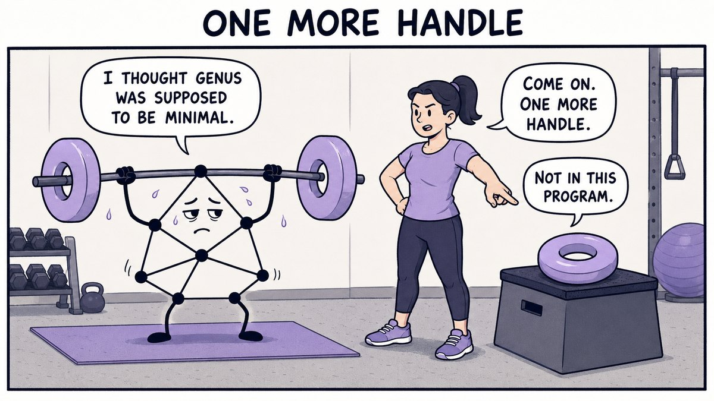
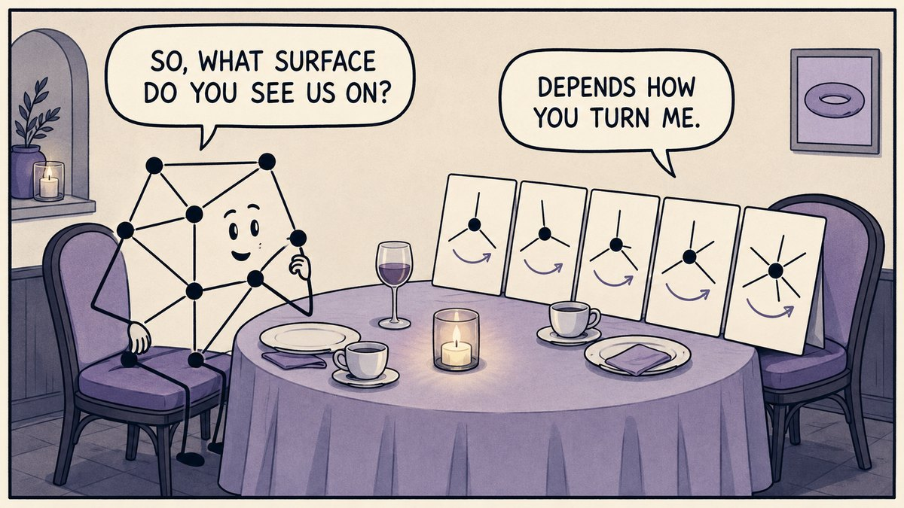

The Balaban (3,11)-cage is known to have genus between 15 and 17 — but nobody has pinned down which.

The Balaban (3,11)-cage is known to have genus between 15 and 17 — but nobody has pinned down which.

Kuratowski’s theorem: K₅ and K₃,₃ keep you off the plane (genus 0). The torus (genus 1) has a handle for that.

One handle is all a nonplanar graph needs to shed its crossings.

For a connected planar graph, V − E + F = 2 — the faces fall out of the vertices and edges.

A graph is nonplanar exactly when you can find K₅ or K₃,₃ inside it by deleting and contracting.

Robertson–Seymour: every minor-closed family has a finite list of forbidden minors — even when nobody can write it down.

Cospectral graphs can agree on every spectral invariant and still not be the same graph.

Genus is the minimum number of handles a surface needs — no extra reps required.

A rotation system — the cyclic order of edges at each vertex — decides which surface a graph embeds on.